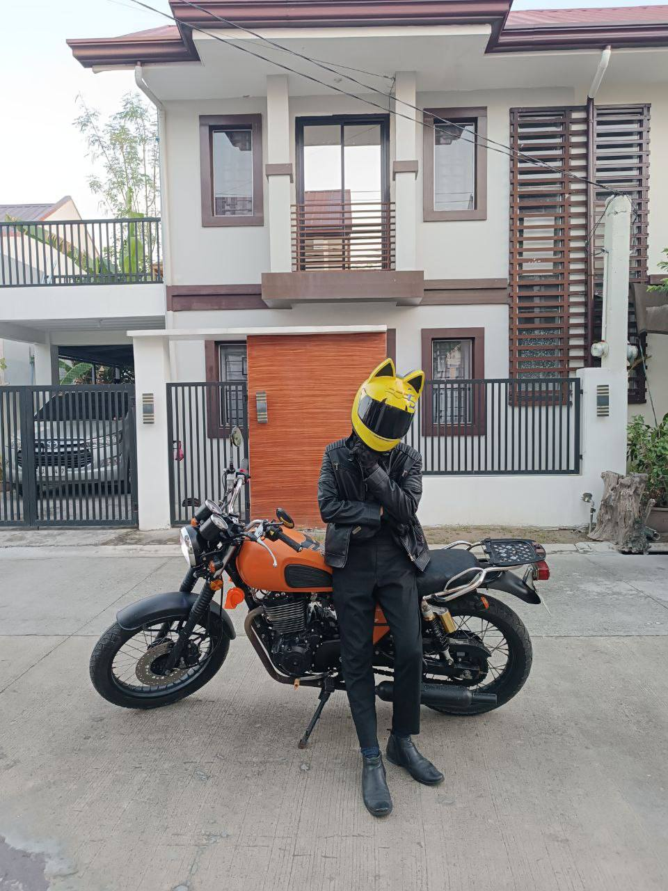

I am
Jonn Ian B. Sabar
About
A fresh graduate with a Bachelor of Science in Information Technology from Pamantasan ng Lungsod ng Maynila, where I earned the Latin honor of Cum Laude. Throughout my academic journey, I cultivated a strong foundation in programming, working with languages such as Java, PHP, Python, and C++. I’m currently seeking a full-time opportunity where I can apply my technical skills, grow professionally, and contribute meaningfully to a dynamic team. I'm passionate about solving real-world problems through technology and eager to continue learning and evolving in the ever-changing landscape of software development.
Jonn Ian B. Sabar
I graduated from Pamantasan ng Lungsod ng Maynila, earning the Latin honor of Cum Laude.
- Birthday: August 29, 2002
- Age: 23
- Phone: 09086875403
- City: Tondo Manila
- Freelance: Available
- Degree: Bachelor
- Email: jonniansabar@gmail.com
Resume
Seeking a full-time opportunity to utilize technical expertise and gain professional experience.
Summary
Jonn Ian B. Sabar
Fresh graduate from PLM, Cum Laude.
- 154 Osmeña Pacheco Ruby St. Tondo Manila
- 09086875403
- jonniansabar@gmail.com
Education
Tertiary
2021 - 2025
Pamantasan ng Lungsod ng Maynila
Bachelor of Science in Information Technology
Intermediate
2019 - 2021
National Teachers College
Information and Communications Technology
Professional Experience
Internship - Data Analyst
Feb 2025 - Apr 2025
Pamantasan ng Lungsod ng Maynila
- Ensured data accuracy and integrity.
- Created dashboards using Power BI and Excel.
Freelance Full Stack Web Developer
Jan 2024 - Mar 2025
- Updated projects based on client feedback.
- Developed web applications to improve engagement.
- Delivered assignments on time and within budget.